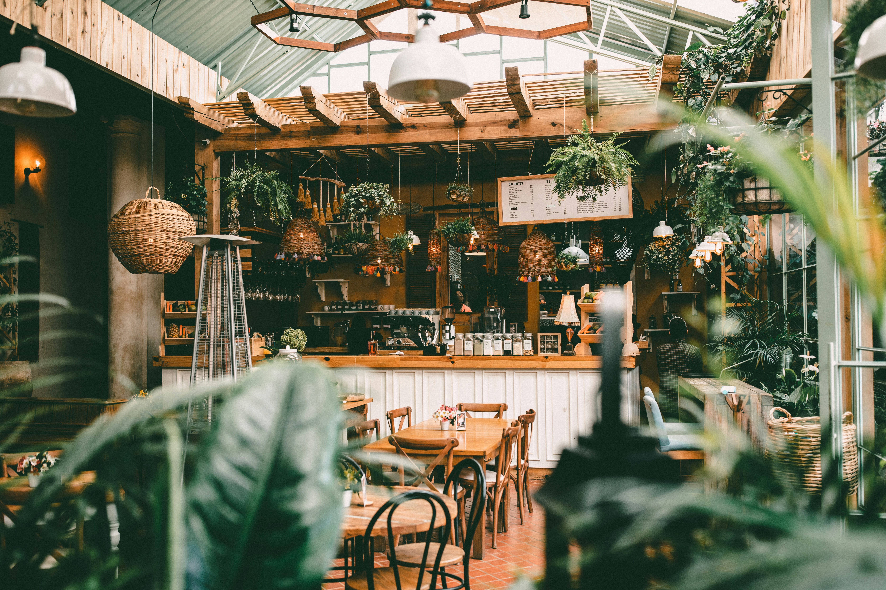
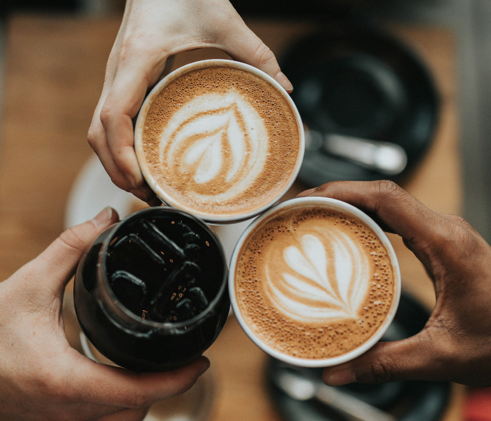
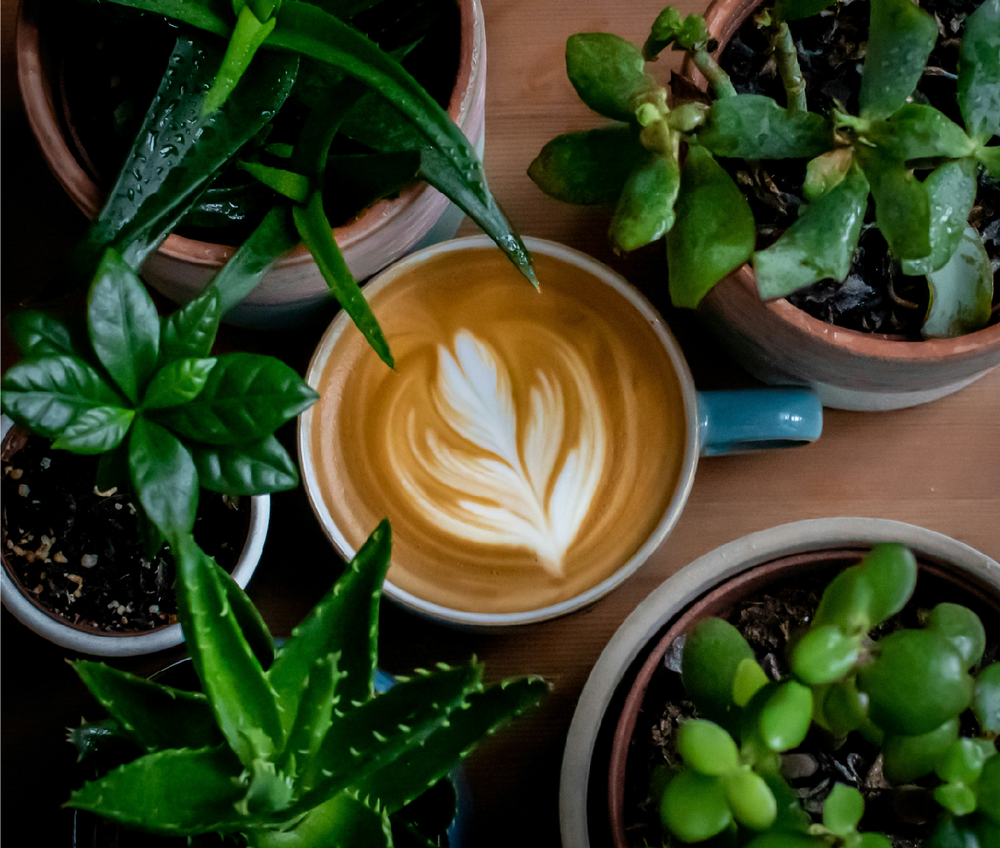
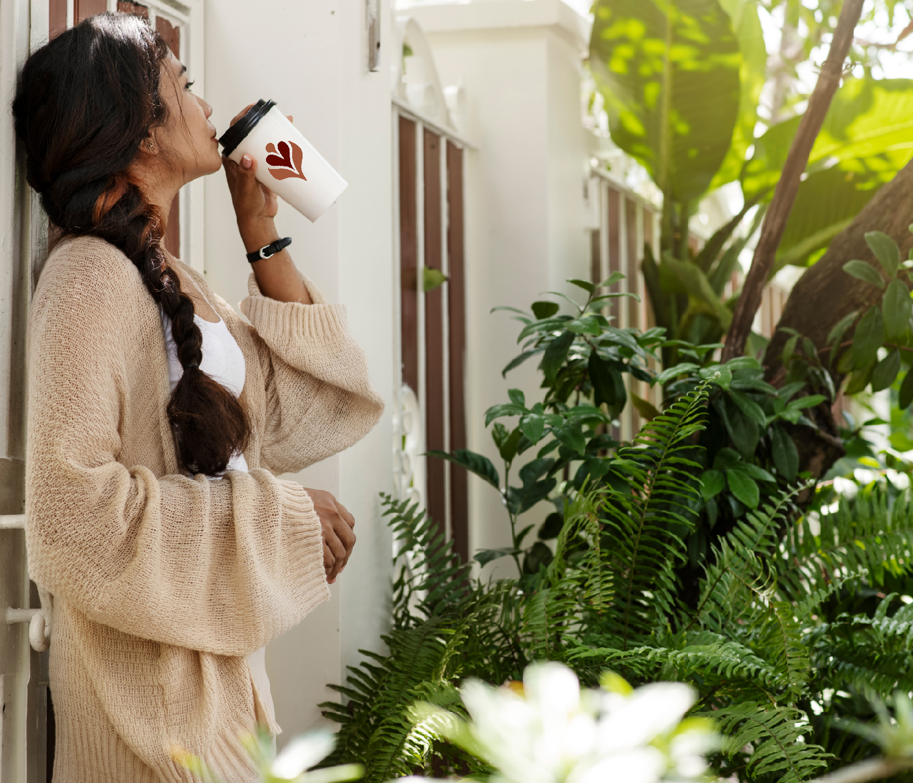

Bienvenidos a Cavero
Café y vivero
Tu refugio de café y naturaleza en Vicente López
Momentos para compartir

#CAVERO

Compartí tu experiencia

Tu pausa perfecta
Café y naturaleza
Donde el café y la naturaleza se encuentran
CAVERO es más que una cafetería: es un espacio donde el café de especialidad y la naturaleza conviven en armonía. Ubicado a pasos de la costanera de Vicente López, nace de la unión entre dos pasiones: el diseño de espacios verdes de Lali y el arte del café de Lucas. Juntos crearon un lugar acogedor, atendido por sus propios dueños, donde cada detalle está pensado para invitar a una pausa consciente. En CAVERO podés disfrutar de una taza de café rodeado de plantas, aromas, luz natural y texturas que remiten a lo simple, a lo artesanal, a lo real. Además del café, ofrecemos un vivero con flores de estación, ramos y plantas seleccionadas para llevarte un pedacito de este universo verde a casa. Creemos en los espacios que inspiran, en los sabores que quedan en la memoria y en los encuentros que suman. CAVERO. Donde el café y la naturaleza se encuentran.
¿Por qué elegir Cavero?
Café de especialidad
Granos únicos y métodos precisos para una experiencia sensorial auténtica.
Ver másVivero con alma
Plantas, flores de estación y macetas que llenan de vida cada rincón.
Explorar vivero
Atención con corazón
Somos Lali y Lucas. Estamos acá, para que te sientas como en casa.